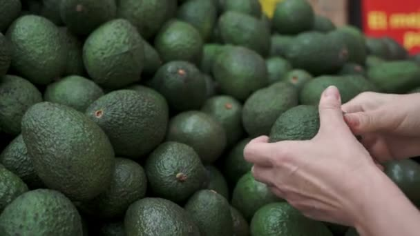

Shopping for an Avocado
When you are shopping for avocados you want to avoid and sunken in dark spots or cracks. More times then not, they will still be hard, which is fine, because they will continue to ripen once you get them home.
You will know you have a perfectly ripe avocado by using this little trick: Hold the avocado very gently in your palm and press very gently against its surface using your thumb. A ripe avocado will yield to gentle pressure, without feeling squishy.
You can also lift up this little belly button to take a peek at the color – if its a bright vibrant green, you’ve got a good one, if it looks brown under there – leave it at the store. But either way, pop that belly button back on when you’re done.
